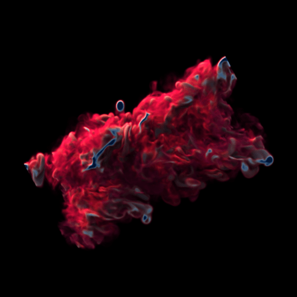

|
David Bauer I am research scientist at Meta. Before that, I built systems that leverage deep learning to enable scientific data visualization. My work focuses on the development of high-performance neural rendering systems and virtual reality (VR) visualization applications. I did my PhD at UC Davis where I was advised by Kwan-Liu Ma as part of the VIDi group. During that time, I interned at Disney Research Studios where I worked on neural path guiding and at Intel, working on feature extensions to Open Image Denoise. My bachelors is from the Vienna University of Technology where I completed my thesis jointly at ImageBiopsy Lab advised by Eduard Gröller. |
{kind=link}
Research |

|
GSCache: Real-Time Radiance Caching for Volume Path Tracing using 3D Gaussian Splatting
David Bauer, Qi Wu, Hamid Gadirov, Kwan-Liu Ma IEEE Transactions on Visualization and Computer Graphics (TVCG), 2026 project page / arxiv A path-space radiance caching method for real-time volume path tracing. The method uses 3D Gaussian splatting to create a multi-level, trainable cache. The approach reduces noise and improves image quality without increasing rendering costs. The cache dynamically adapts to changes in lighting and transfer functions. It outperforms state-of-the-art neural radiance caching in both quality and efficiency. |
|
|
HyperFLINT: Hypernetwork‐based Flow Estimation and Temporal Interpolation for Scientific Ensemble Visualization
Hamid Gadirov, Qi Wu, David Bauer, Kwan-Liu Ma, Jos Roerdink, Steffen Frey Computer Graphics Forum (CGF), 2025 paper / arxiv A deep learning framework for estimating flow fields, temporally interpolating scalar fields, and exploring parameter spaces in spatio-temporal scientific ensemble data. By using a hypernetwork to incorporate simulation parameters, it dynamically adapts to diverse conditions. |
|
|
From Cluster to Desktop: A Cache-Accelerated INR framework for Interactive Visualization of Tera-Scale Data
Daniel Zavorotny, Qi Wu, David Bauer, Kwan-Liu Ma Eurographics Symposium on Parallel Graphics and Visualization (EGPGV), 2025 paper / code / arxiv A GPU-accelerated framework that enables fast, interactive visualization of implicit neural representations (INRs) for massive scientific datasets. It uses a scalable, multi-resolution cache to minimize redundant inference steps to achieve a 5× speedup over state-of-the-art INR rendering. This allows tera-scale datasets to be explored on consumer-grade hardware after in situ compression on high-performance systems. |
|
|
A Multi-Layout Design For Immersive Visualization of Hierarchical Network Data
David Bauer, Chengbo Zheng, Oh-Hyun Kwon, Kwan-Liu Ma IEEE International Symposium on Mixed and Augmented Reality (ISMAR), 2024 paper / arxiv A multi-layout design for immersive exploration of hierarchical network data in VR. The design offers four distinct views to optimally utilize available space and adapt to different tasks. A user study shows our approach outperforms traditional single-layout methods in both focused and whole-network scenarios. |
|
|
Photon Field Networks for Dynamic Real-Time Volumetric Global Illumination
David Bauer, Qi Wu, Kwan-Liu Ma IEEE Transactions on Visualization and Computer Graphics (TVCG), 2024 paper / arxiv A neural representation for real-time, phase-function-aware volumetric global illumination. Trained in seconds on multi-phase photon caches, they enable interactive path-traced rendering of large datasets with reduced noise and faster performance than traditional methods. Our custom neural path tracer demonstrates high visual quality and accuracy while maintaining interactive framerates. |
|
|
Interactive Volume Visualization via Multi-Resolution Hash Encoding Based Neural Representation
Qi Wu, David Bauer, Michael Doyle, Kwan-Liu Ma IEEE Transactions on Visualization and Computer Graphics (TVCG), 2024 paper / arxiv / code An implicit neural representation (INR) for large-scale volume data compression. The approach achieves high fidelity reconstruction with up to 1000× data compression rates, supports terascale datasets on a single RTX 3090, and eliminates pre-training by fitting training into the rendering loop. It outperforms state-of-the-art methods in speed, quality, and scalability. |
|
|
HyperINR: A Fast and Predictive Hypernetwork for Implicit Neural Representations via Knowledge Distillation
Qi Wu, David Bauer, Yuyang Chen, Kwan-Liu Ma preprint, 2023 arxiv A hypernetwork technique that generates weights for a compact implicit neural representation (INR) for scientific visualization. It combines multiresolution hash encodings with knowledge distillation to achieve high quality reconstruction while supporting tasks like temporal super-resolution and dynamic lighting. |
|
|
FoVolNet: Fast Volume Rendering using Foveated Deep Neural Networks
David Bauer, Qi Wu, Kwan-Liu Ma FoVolNet: Fast Volume Rendering using Foveated Deep Neural Networks, 2023 paper / arxiv A neural reconstruction method for sparse foveated rendering achieving high-quality, interactive results for volume visualization. By sparsely sampling around the user's focal point and reconstructing the frame with a compact neural network, it saves computation time while maintaining perceptual quality. FoVolNet outperforms state-of-the-art neural reconstruction techniques in both speed and visual fidelity. |
|
|
A Comparison of the Fatigue Progression of Eye-Tracked and Motion-Controlled Interaction in Immersive Space
Lukas Masopust, David Bauer, Siyuan Yao Kwan-Liu Ma EEE International Symposium on Mixed and Augmented Reality (ISMAR), 2021 paper A comparison of eye-tracking-based interaction with traditional motion controller-based interaction in VR, focusing on how fatigue affects performance during prolonged use. The study reveals fatigue patterns for each method, offering new insights for designing future XR interaction techniques. |
Projects |
|
|
Stage: A universal 3D Scene Loader
Stage is a tool that lets you load various 3D scene and object formats into a uniform representation that is easy to use and integrate into your renderer, ray tracing application or game engine. |

|
FaRT: Fabulous Ray Tracer
Hobby project that implements real-time path tracing for various backends to facilitate learning of different graphics APIs and experiment with various rendering techniques like reservor sampling. |
|

|
OVR: Open Volume Renderer
Scientific visualization renderer developed in our research group at UC Davis. Supports various types of volume rendering and different rendering backends like NVIDIA Optix or Intel OSPRay. It forms the basis for a lot of our research work. |
|
Website template can be found here. Credits to Jonathan Barron. |